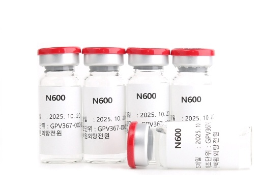
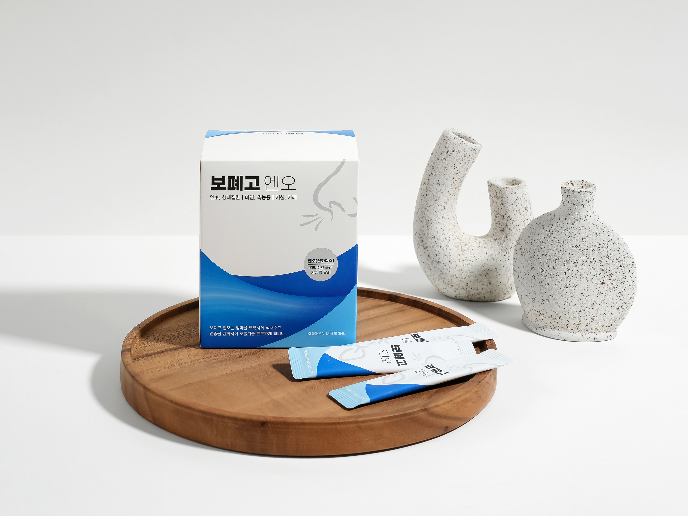
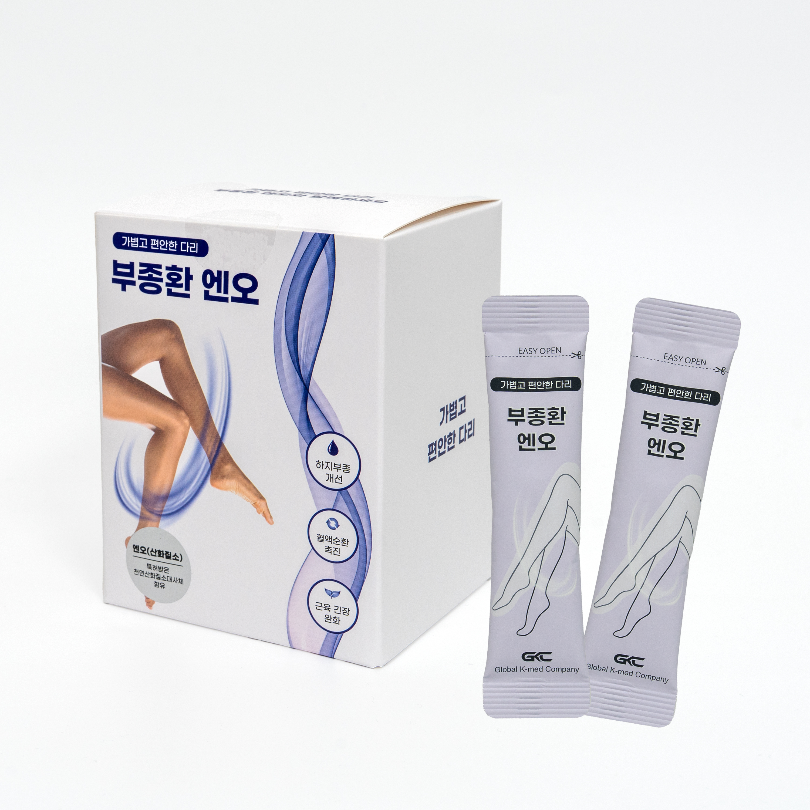
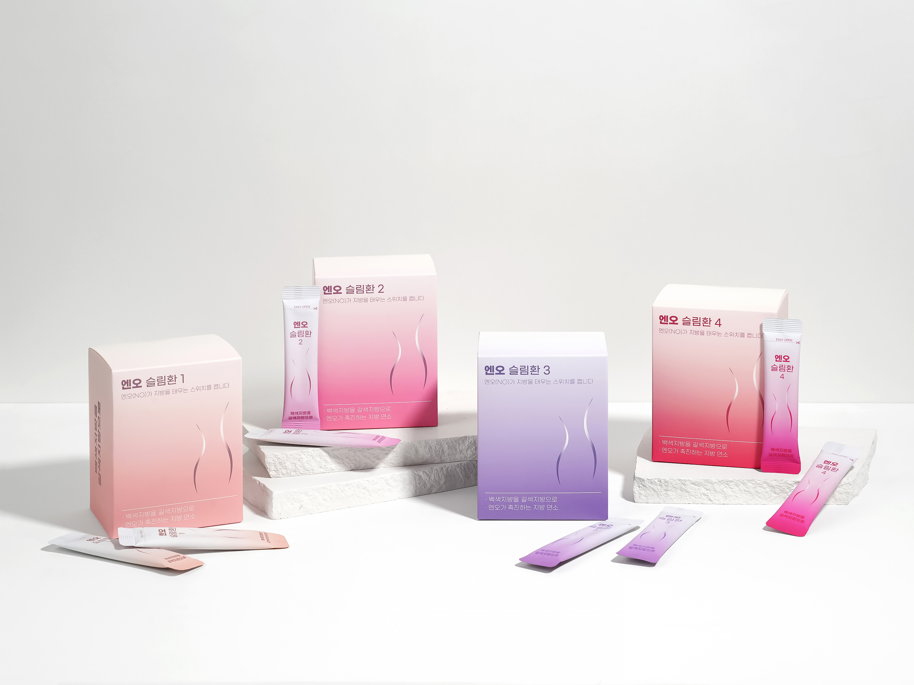
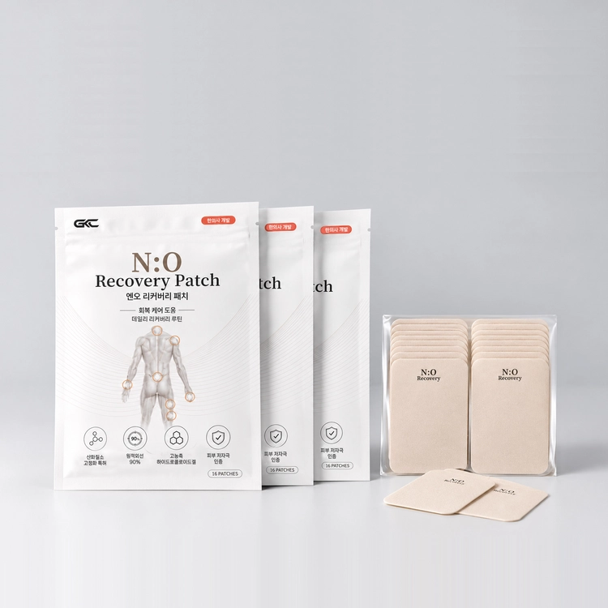

1998년 노벨 생리의학상이 입증한 생명의 기적 분자, 산화질소.
막힌 미세혈류와 림프 순환을 열어 세포 단위의 염증을 치유하고 활력을 되찾아 드립니다.
혈관 내피세포에서 분비되는 산화질소(NO)는 혈관 평활근을 이완시켜 직경을 확장하고 탄력을 복원시키는 인체 내 가장 핵심적인 신호전달 분자입니다. 혈액과 림프의 순환을 촉진하여 조직 세포 깊숙한 곳까지 산소와 영양분을 전달하고 노폐물을 배출합니다.
20대에 100%이던 산화질소 생성력은 40대에 50%, 60대에는 산화 스트레스 등으로 실제 이용률이 25% 수준까지 떨어집니다. 이 부족해진 틈을 외부에서 안전하게 채워주는 것이 혈관 회춘의 핵심입니다.
미세 순환을 정상화하여 만성 염증 물질을 배출하고 조직 재생을 유도합니다. 뇌혈류 개선을 통한 인지기능 보호, 말초 신경 및 관절 통증의 근본 원인을 제어합니다.
화학적 질산염 제제와 달리, 발효된 천연 엔오 대사체 기술과 한약재를 접목하여 약물 내성 없이 장기 복용에도 안전한 흡수율을 자랑합니다.
아래 항목 중 3가지 이상에 해당하신다면 적극적인 산화질소 보충 관리가 필요합니다.

원내 특화 시술오십견 | 디스크 | 관절염 | 두통·어지럼증 | 생리통
1998년 노벨상을 받은 산화질소를 이용한 약침으로, 혈액순환과 림프순환을 강력하게 촉진합니다[cite: 1]. 퇴행성슬관절염, 족저근막염, 만성위염 등 다양한 만성 염증성 질환에 항염증 및 면역강화 효과가 뛰어나며 빠른 통증 제어가 가능합니다[cite: 1].

호흡기 보약인후·성대질환 | 만성 기침·가래 | 비염·축농증
산화질소의 혈류 개선과 천연 점막 보호 한약재(길경, 맥문동, 오미자 등)가 결합하여 건조하고 마른 기관지 점막을 촉촉하게 적시고 염증을 가라앉힙니다.
보폐고 엔오 자세히 보기 👉
하지·전신 부종하지부종 | 종아리 당김 | 하지 저림 | 산후부종
전통 명방 당귀작약산을 기반으로 오약, 현호색과 천연 산화질소 대사체를 결합했습니다. 하체 정체 수분을 배출하고 미세혈류를 촉진하여 무거운 종아리와 부종을 빠르게 해소합니다.
부종환 처방 상담하기 👉
다이어트·대사 촉진체지방 감소 | 기초대사량 증가 | 식욕 조절 | 요요 방지
산화질소(NO)의 혈류 순환 개선 효과를 다이어트 처방에 접목했습니다. 저하된 신진대사를 끌어올려 체지방 연소를 촉진하고, 무리 없이 건강하게 체중을 감량할 수 있도록 돕습니다.
엔오슬림환 자세히 보기 👉
국소 통증·근육 이완근육통 완화 | 어깨·허리 결림 | 미세혈류 촉진
산화질소(NO) 성분을 피부에 직접 전달하는 특허 기술을 적용했습니다. 뭉친 근육과 관절 부위에 부착하면 국소 부위의 미세혈류 순환을 촉진하여 통증을 완화하고 빠른 회복을 돕습니다.
엔오패치 처방 상담하기 👉세포 재생 | 만성 염증 | 혈관·림프 순환 개선
우성한의원은 최신 분자생물학적 근거를 바탕으로 산화질소(NO)와 전통 정통 한의학을 융합한 다양한 특화 처방을 연구·개발하고 있습니다.
주소: 경기도 고양시 일산서구 고양대로 726, 4층 우성한의원
주차 안내: 일산제1공영주차장 (지도상 건물 우측 이용 시 1시간 정산 지원)
• 평일: 09:30 ~ 19:00 (점심 13:00 ~ 14:00)
• 목·토: 09:30 ~ 14:00 (점심시간 없이 연속진료)
• 일요일 및 공휴일: 휴진